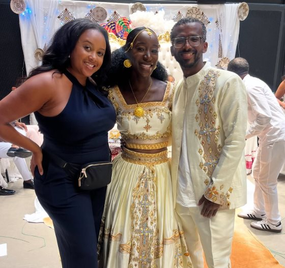

Toni Bullock
From producing Emmy Award-winning television to founding Callsheets 2 Cocktails, Toni Bullock creates compelling stories, builds meaningful communities and opens doors for the next generation of women in media.
Proposals, ceremonies, and receptions, run to broadcast standard from first callsheet to final toast.

Toni Bullock is a National Emmy Award-winning television producer who has spent her career shaping premium unscripted and syndicated television. Her producing credits include Red Table Talk, Black Women Own the Conversation, Peace of Mind with Taraji, The Amazing Race, and Rhythm and Flow, and she most recently served as Senior Producer on the nationally syndicated talk show Sherri from 2024 to 2025.
In 2017, she founded Callsheets 2 Cocktails (C2C), a professional community built to connect, educate, and empower women in media through panels and networking events.
She is also the founder of Effortlessly Coordinated, a Brooklyn, NY-based event coordination team specializing in weddings, proposals, and corporate events, bringing production-level standards from the screen to the celebrations and gatherings she plans.
“Never be scared to take a risk.”
Toni Bullock
Launched C2C to connect, educate, and empower women in media.
Field Producer on Rhythm and Flow; producer on Red Table Talk.
Producer on Black Women Own the Conversation, recognized as an Emmy-winning production.
55 episodes as Senior Producer on the nationally syndicated talk show.
Inside Diverse Cinema, Episode 105: Emmy® Award-Winning Producer Toni Bullock on Unscripted Television, Networking & the Future of Storytelling
An interview with Emmy Award-Winning producer Toni L. Bullock (“Black Women Own the Conversation”) exploring the creative and professional realities of unscripted television production. Covers producing and casting, the impact of her Emmy win, the producing ecosystems of Los Angeles and New York, and the importance of networking and professional reinvention in an evolving entertainment industry.
Founded 2017
A professional community built to connect, educate, and empower women in media. Toni founded it in 2017 and runs it through panels and networking events.
What it does
Cities and event cadence: [Toni to confirm]
Brooklyn, NY · Kings County
An event coordination team that brings production-level standards from the screen to the celebrations and gatherings Toni plans.
What it offers
Based in Brooklyn, New York (Kings County), serving the greater New York City area.

National Emmy-winning credits across unscripted television, from Red Table Talk to Sherri.
See the workCallsheets 2 Cocktails, founded 2017: a professional community for women in media.
Join the roomEffortlessly Coordinated: weddings, proposals, and corporate events in Brooklyn.
Book the teamToni Bullock is a National Emmy Award-winning television producer whose credits include Red Table Talk, Black Women Own the Conversation, Peace of Mind with Taraji, The Amazing Race, Rhythm and Flow, and Sherri. She is also the founder of Callsheets 2 Cocktails and Effortlessly Coordinated.
Callsheets 2 Cocktails (C2C) is a professional community Toni Bullock founded in 2017 to connect, educate, and empower women in media through panels and networking events.
Effortlessly Coordinated is Toni Bullock’s Brooklyn, NY–based event coordination team, specializing in weddings, proposals, and corporate events.
Yes. Effortlessly Coordinated is based in Brooklyn, NY and plans weddings there, along with proposals and corporate events.
From production collaborations to the biggest day of your life, I’d love to hear your story and help bring it to life.